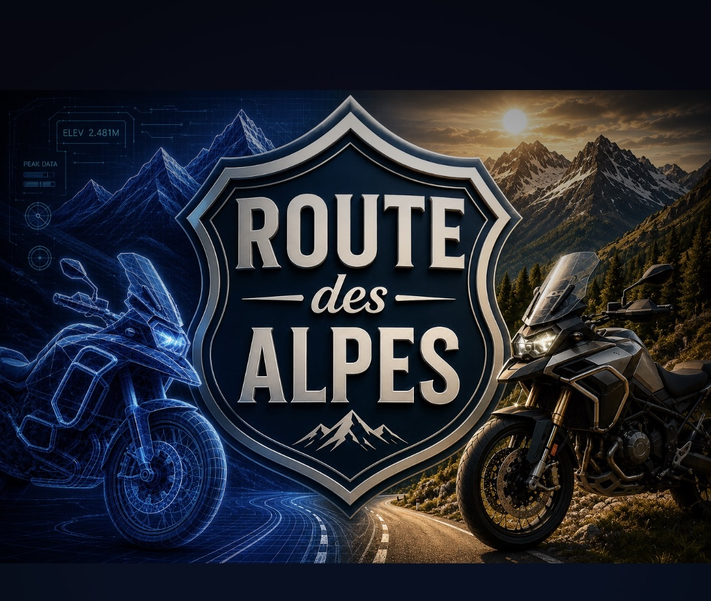

Kurvige, motorradfreundliche Navigation für die schönsten Alpenpässe.
Fahrspaß statt schnellster Strecke.
Strecken, die bewusst Kurven und Panorama suchen und auf Wunsch Autobahnen meiden.
Hunderte Pässe in der Schweiz, Österreich, Italien, Frankreich und Deutschland – mit Höhe, Region und Schwierigkeitshinweisen.
Lass dir auf Wunsch komplette Touren vorschlagen – optional mit deinem eigenen KI-Schlüssel.
Vom aktuellen Standort aus eine Schleife planen und bei Bedarf eine andere Variante berechnen.
Klare Ansagen, die auch mit ausgeschaltetem Display weiterlaufen.
Lean-Winkel und Tour-Statistik direkt auf dem Gerät – ohne Datenweitergabe.
Hinweise auf gesperrte oder ungeeignete Strecken aus öffentlichen Geodaten.
Teile Treffpunkt oder Position mit Mitfahrern – per Link, ganz ohne Konto.
Sichere deine Routen in deiner eigenen iCloud und stelle sie auf einem neuen Gerät wieder her.
Mehrsprachig (Deutsch, Englisch, Französisch, Italienisch) · Keine Werbung · Kein Tracking